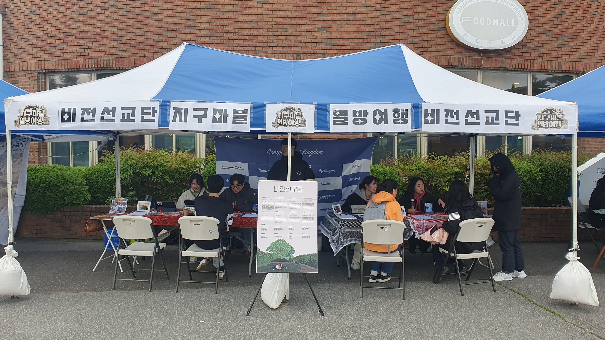
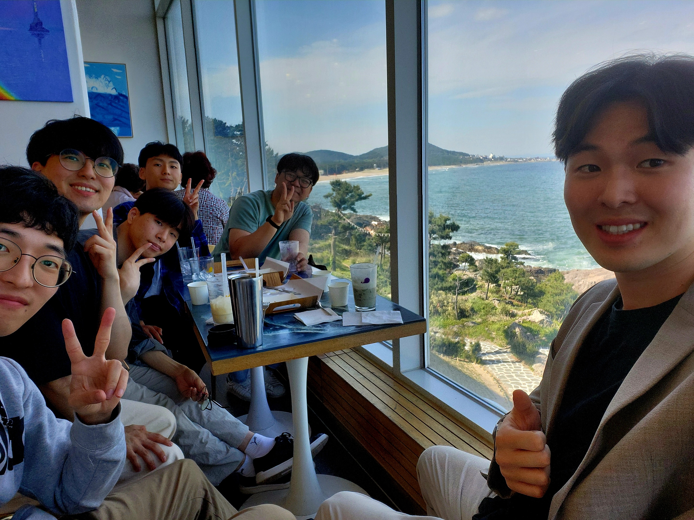

근황
안녕하세요.
어느덧 한해의 절반을 바라보는 6월입니다. 저는 선교사를 준비하며 비전선교단 전임간사로 한동대와 포항 청년들을 섬기고 있습니다. 청년들이 주님께 헌신하지 않고 자기의 삶에만 집중되어 가는 이 시대에, 부족함에도 큰 은혜를 입어 많은 청년들이 연결되어 바쁘지만 감사하게 지내고 있습니다.
전임간사를 하면서 참 좋은 점이 하나 있습니다. 직장생활을 했던 삶에 비하면 재정과 시간과 나의 삶은 없어져 가지만, 사람들을 섬기며 하나님의 살아계심을 더 가까이서 느끼고 하나님을 깊이 알아갈 수 있다는 게 참 좋습니다. 섬기기엔 많이 부족하고 내 육체의 죄성에서도 자유하지 못하지만, 하나님이 아닌 다른 것을 소망하고 다른 기쁨을 구하는 안타까운 시간을 빨리 돌이킬 수 있는 삶이기에 참 감사합니다.

<한동대 선교축제 부스 운영하며>
여전히 저는 하나님이 아닌 다른 사람의 인정을 구하고 비교하려는 죄성이 있지만, 그 모든 연약함을 아시며 저의 마음을 훈계하시고 붙잡으시는 주님의 선하심을 느낍니다. 도리어 낮고 이름이 드러나지 않는 자리로 이끄시는 손길에 마음이 어렵다가도, 그 안에 담긴 주님의 사랑을 보며 나를 가장 잘 아셔서 세심하게 인도하시고 붙잡으심에 주님을 찬양하게 되는 요즘입니다.
최근 다윗과 밧세바 사건을 묵상하며 새롭게 와닿았던 부분이 있어 나누고 싶습니다. 다윗이 밧세바를 범했을 때 임신하지 않았더라면 완전범죄가 되었을 것 같다는 생각으로 묵상이 시작되었습니다. 다윗의 죄로 인해 시작된 일이지만, 만약 밧세바가 임신하지 않았다면 다윗은 주어진 권력과 힘으로 이 사건을 잘 감췄을 수도 있을 것 같습니다. 한번씩 이런 질문을 하며 묵상하곤 하는데 꽤 재밌습니다. 여러분은 어떻게 생각하시나요?

<훈련생들과 아웃팅>
다윗이 밧세바를 범했지만, 밧세바가 임신하지 않았더라면, 충성스러운 신하인 우리아와 이스라엘을 속이고 자신의 죄를 감추며 살아갈 수 있었을지 모르겠습니다. 어떻게든 감추고자 자신의 지혜와 힘을 사용하기도하고, 스스로를 이방 나라의 왕과 비교하며 합리화도 하며 자기의 위치에 합당한 겉모습은 보여줄 수 있었겠죠. 하지만 모든 마음을 아시고 다윗을 사랑하시는 주님 앞에, 다윗은 이후 정직하게 나아가기는 어려웠을 거 같습니다. 감추어진 죄는 하나님과 다윗의 관계를 반드시 파괴했을 것입니다.
하지만 모든 생명의 주관자이신 하나님은, 다윗이 범죄한 그 시간에 밧세바를 임신하게 허락하시고, 다윗이 하나님과 단절될 수밖에 없는 죄를 숨기지 못하도록 이 사건을 드러내십니다. 그리고 선지자를 보내셔서 다윗의 감추어진 죄를 스스로가 핑계치 못하도록 말씀하십니다. 그로 인해 다윗은 가족과 이스라엘 백성 앞에 자신의 수치를 드러내며 힘든 시간을 보내며 죄로인한 아픔을 겪지만, 다윗의 회개는 그가 다시 주님 앞에 정직하게 나아가도록 만들어줍니다.
[삼하12:13] 다윗이 나단에게 이르되 내가 여호와께 죄를 범하였노라 하매 나단이 다윗에게 말하되 여호와께서도 당신의 죄를 사하셨나니 당신이 죽지 아니하려니와
하나님은 기다리셨다는 듯 즉시 나단 선지자를 통해 그 죄를 용서하셨음을 말씀하십니다. 다윗이 자신의 죄를 고백하기를, 그 마음이 주님께 정직히 나아오기를 기다리셨다는 듯 용서를 선포하십니다. 하나님은 감출 수 있었던 그 죄를 드러내시며, 다윗이 주님께 나아오도록 인도하신 것입니다. 하나님은 무엇보다 다윗과의 관계를 지키시기를, 그 사랑의 관계를 회복하길 원하셨던 것 같습니다. 다윗은 스스로의 죄를 감추고자 하지만, 다윗과의 관계를 포기하지 않으시는 하나님의 선하심을 보게됩니다.
 <교회에서 노방전도 찬양>
<교회에서 노방전도 찬양>
때론 이해되지 않는 슬픔과, 나의 죄성 또는 누군가의 죄로 인한 아픔을 겪을때 가 있지만, 그 모든 사건 뒤에는 우리와 사랑의 관계를 회복하길 원하시는 주님의 선하신 뜻이 있음을 믿습니다. 하나님이 아닌 다른 허망한 것을 붙잡았던 손에 힘을 풀어가시며 나의 시선을 주님께 향하게 하십니다. 그리고 주님만이 내 모든 만족 되셨음을 다시 깨닫게되어 주님 한분만으로 진정 행복함을 느낍니다. 모든 것이 합력하여 선을 이루게 하시는 주님의 선하심을 누리며, 하나님을 더욱 사랑하는 저와 모두가 되기를 소망합니다.
 <한동대 위러브 버스킹>
<한동대 위러브 버스킹>